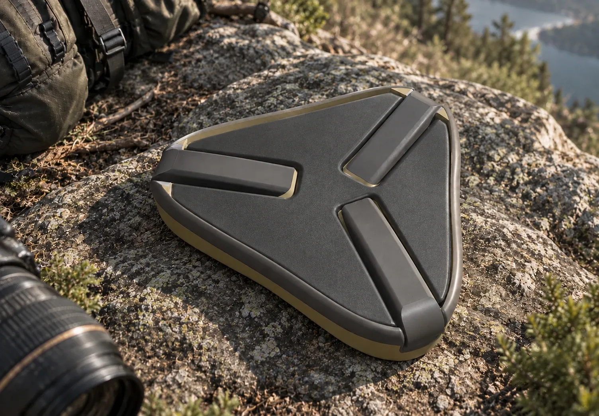
Transporte
Compacto
Plegado, las tres patas quedan alojadas en la base y viaja colgado de la mochila junto al trípode.
Asiento portátil · Fotografía de naturaleza
Un mejor punto de vista en la naturaleza.
Comodidad y estabilidad durante largas esperas.
Diseñado para acompañarte en cada salida.
DELTA es un asiento individual portátil diseñado para fotógrafos de naturaleza que requieren permanecer durante largos períodos en un mismo lugar con comodidad y estabilidad.
Sustracciones estratégicas alivian el peso de la pieza y reducen el material de impresión.
Impreso íntegramente en 3D con un polímero de alta resistencia.
Se pliega para viajar en la mochila y se despliega donde encontrás tu lugar.
El objeto
Forma, ergonomía y fabricación integradas en un solo objeto, aprovechando lo que permite la impresión 3D.
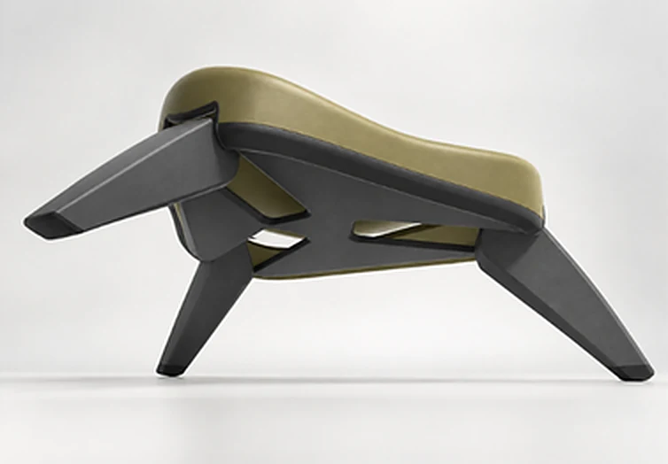
Curvaturas que acompañan la anatomía y reparten las presiones de apoyo durante horas de espera.
Alivian el peso, reducen el material de impresión y generan zonas de agarre.
Tres patas de una sola pieza que se alojan en la base al plegarlo y forman un trípode firme al desplegarlo.
La base triangular asienta estable sobre roca, tierra o pasto.

Transporte
Plegado, las tres patas quedan alojadas en la base y viaja colgado de la mochila junto al trípode.
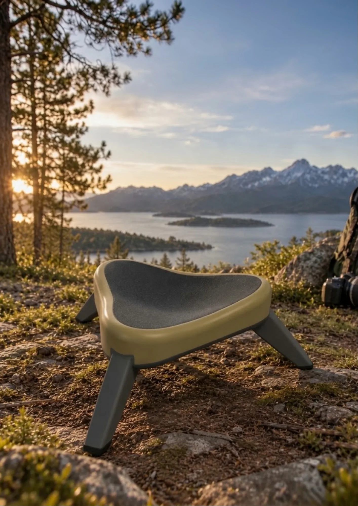
Apoyo
Su base triangular brinda firmeza en todo terreno: roca, tierra o pasto.
Postura
Curvaturas que acompañan la anatomía y una altura pensada para largas esperas.
01 / 04
Plegado, DELTA es una pieza compacta que viaja colgada de la mochila. Tomalo con las dos manos.
02 / 04
Abrí las tres patas desde la base: cada una es de un solo tramo.
03 / 04
La base triangular asienta firme sobre roca, tierra o pasto.
04 / 04
Un asiento estable a 280 mm del suelo para esperar la toma.
Ficha técnica
Tres patas de una sola pieza, una base triangular de 300 mm por lado y un asiento a 280 mm del suelo. Plegado, DELTA vuelve a ser una pieza compacta, lista para colgar de la mochila.
¿Por qué DELTA?
La identidad formal de DELTA nace del símbolo Δ. El triángulo no solo le da nombre: responde a criterios funcionales.
Una geometría triangular de vértices redondeados. El triángulo proporciona una base estable, optimiza la distribución de cargas y reduce el material necesario sin comprometer la resistencia del conjunto.
La altura del asiento favorece una inclinación natural del tronco hacia adelante, facilita el manejo de la cámara y permite incorporarse rápido cuando la escena lo pide. La superficie acompaña la anatomía y reparte las presiones de apoyo.
Impreso íntegramente en 3D en un polímero de alta resistencia. Las sustracciones estratégicas alivian el peso, reducen el consumo de material y generan zonas de agarre. Producción a pequeña escala, con bajo desperdicio.
Más cercade lo esencial
Proceso
Una propuesta ergonómica, liviana y de fácil transporte, pensada para la observación y la permanencia prolongada al aire libre.
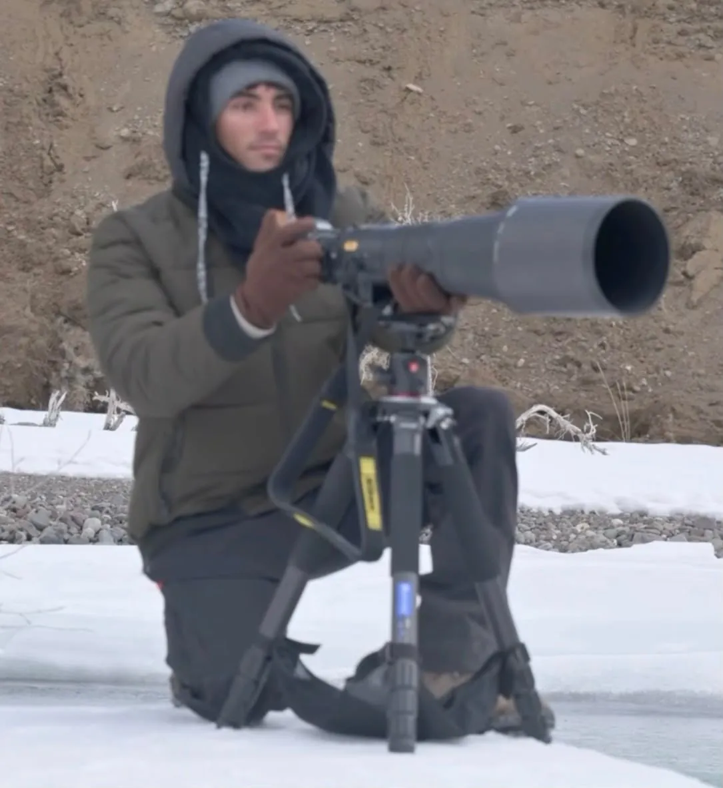
Fotógrafos de naturaleza que esperan horas en un mismo lugar por la toma.
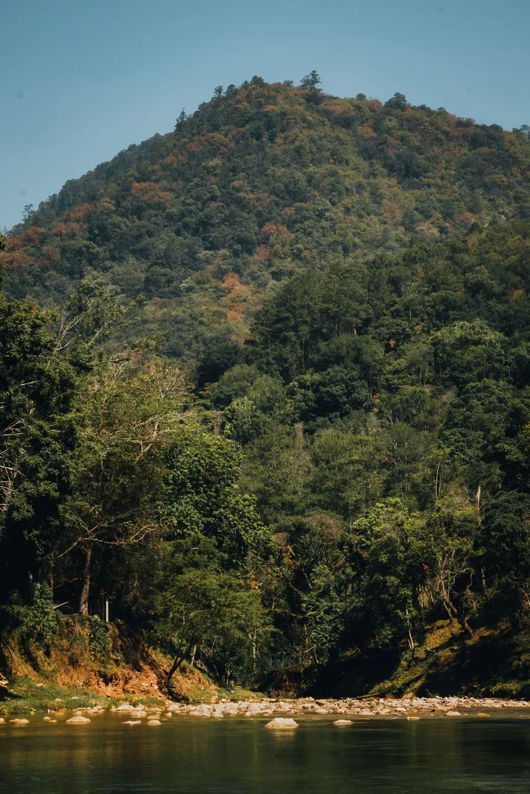
Montaña, bosque y orillas de lagos y ríos: terreno irregular, lejos de todo.
Lo que hoy acompaña al fotógrafo en el campo.
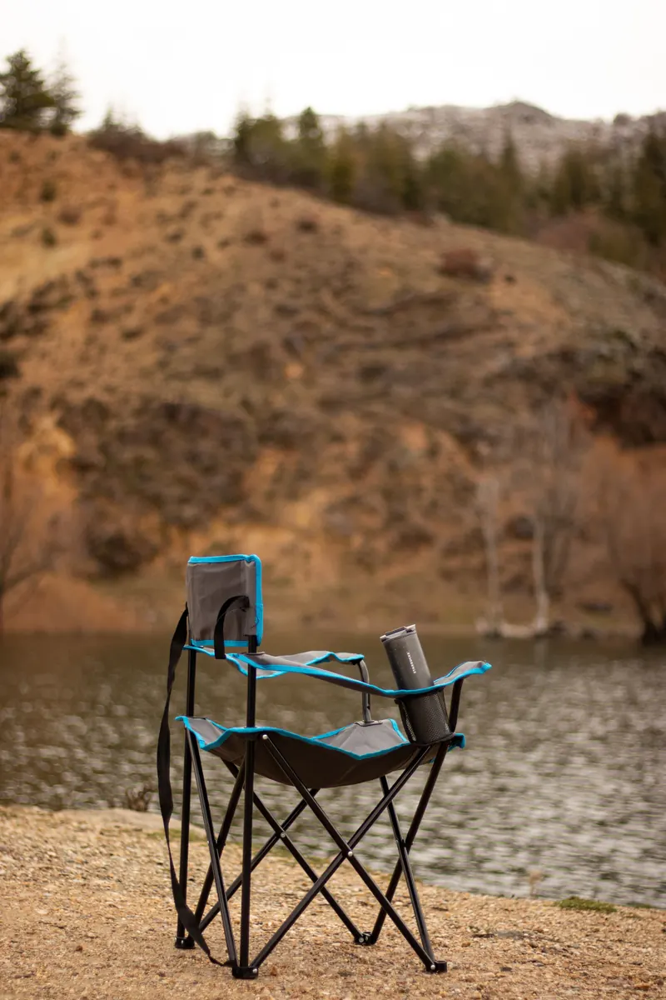
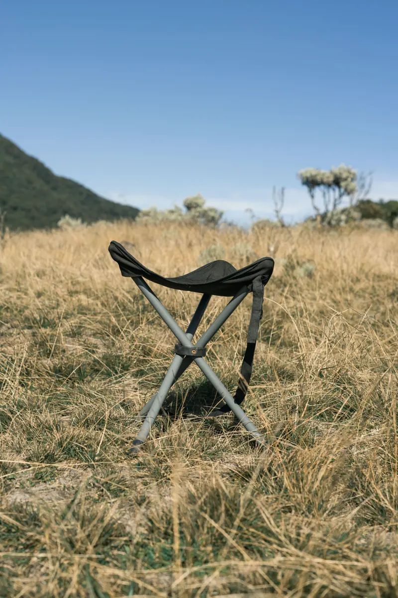
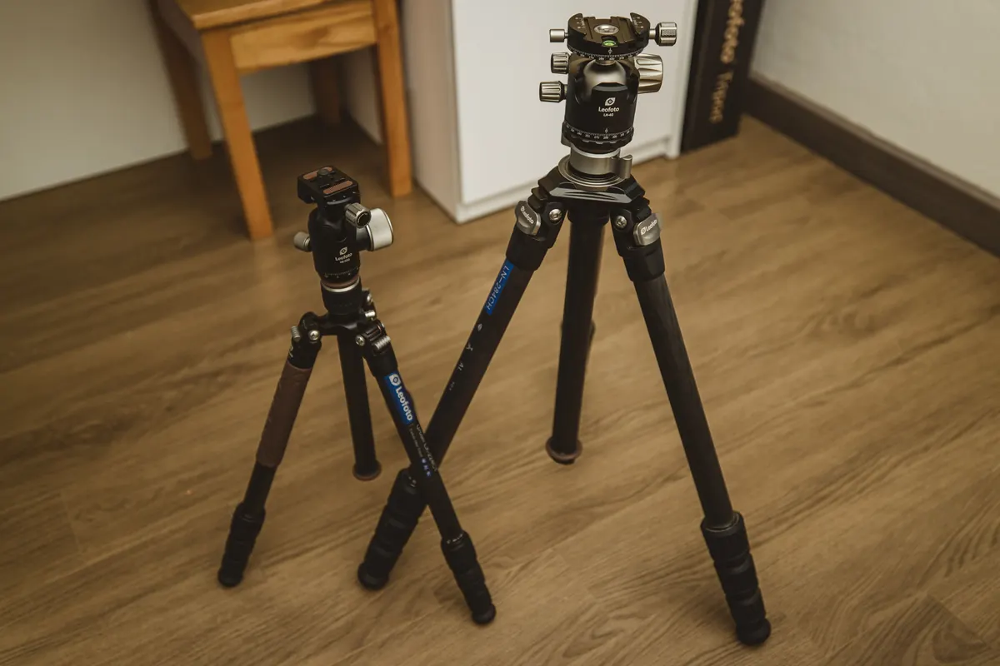
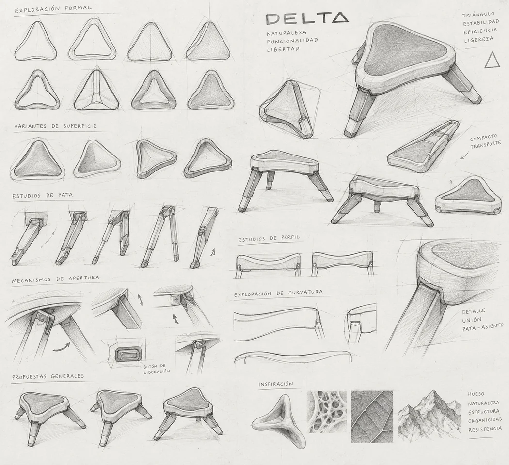
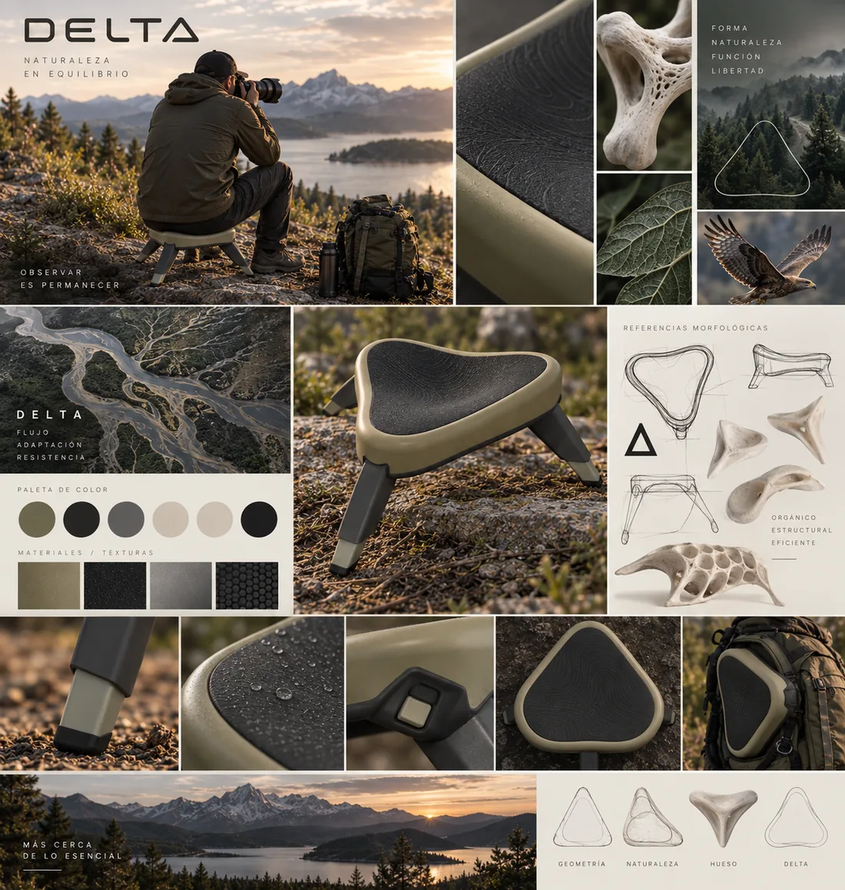
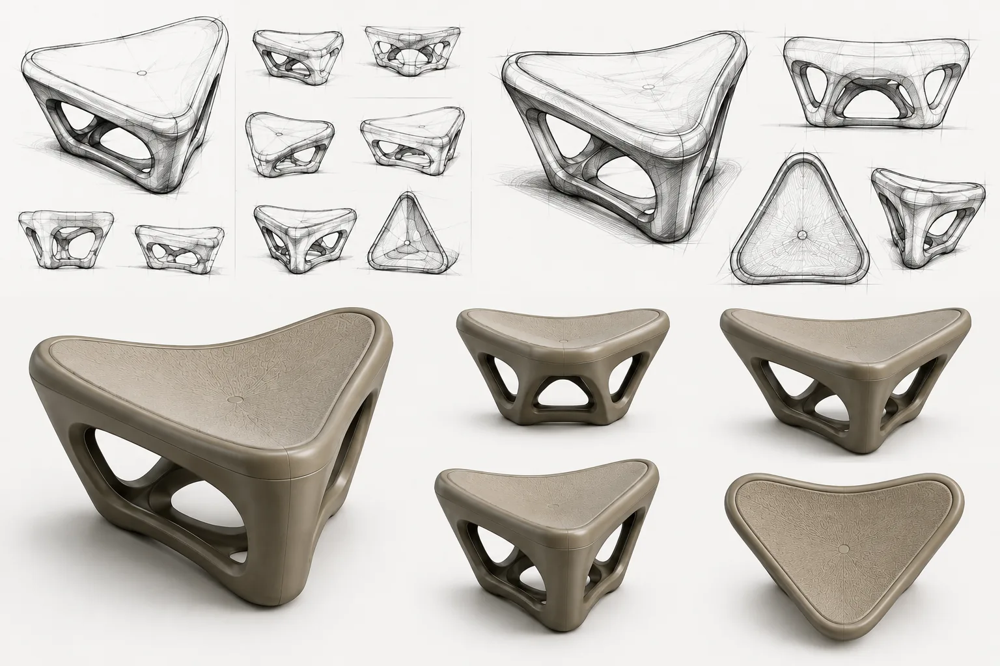
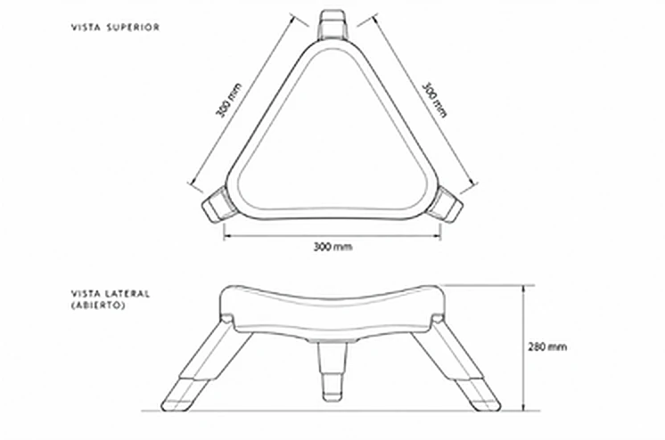